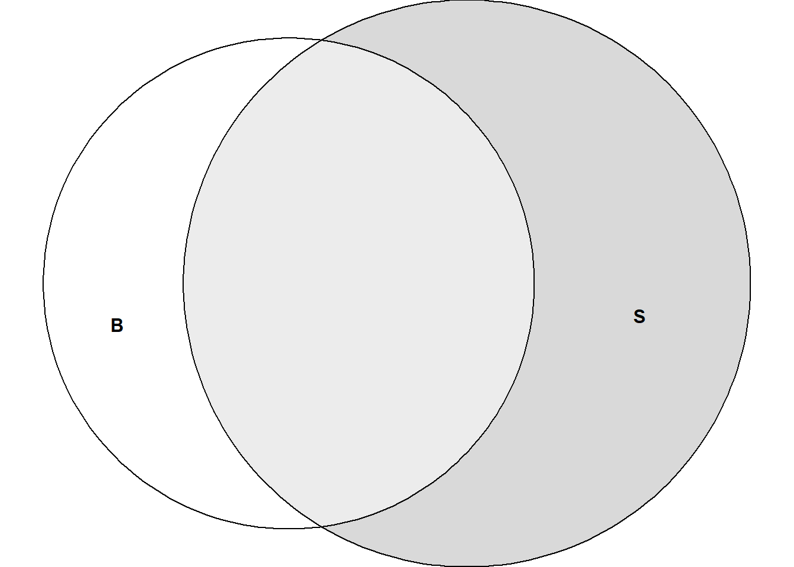
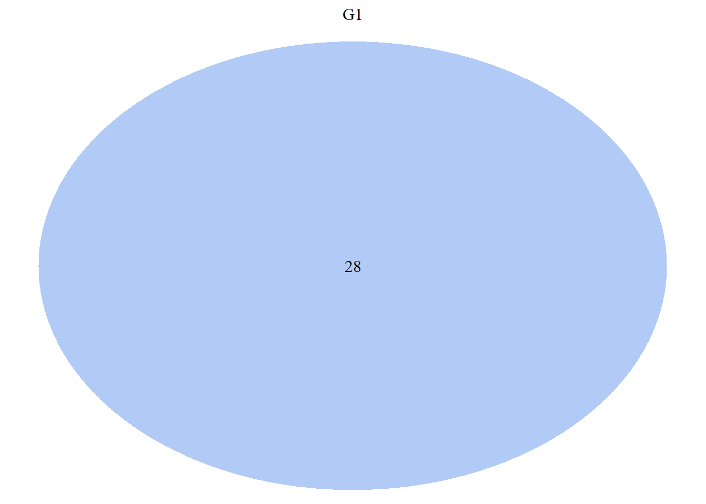
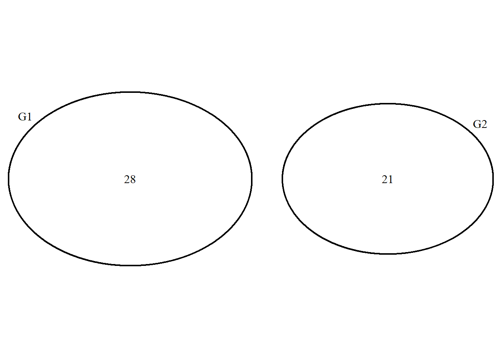
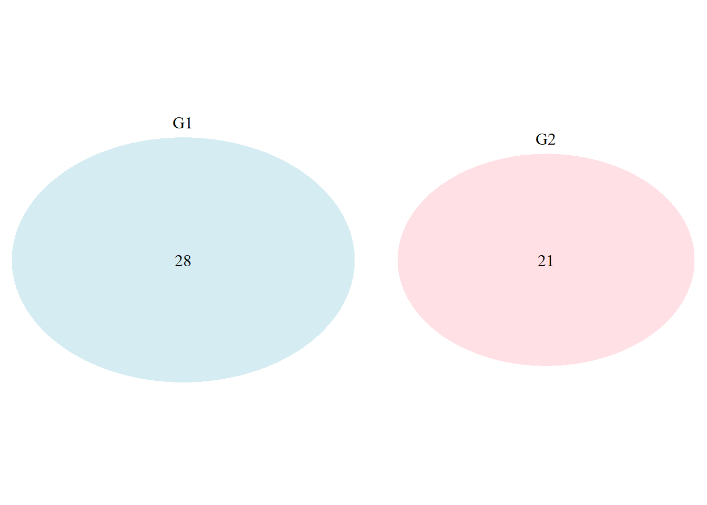
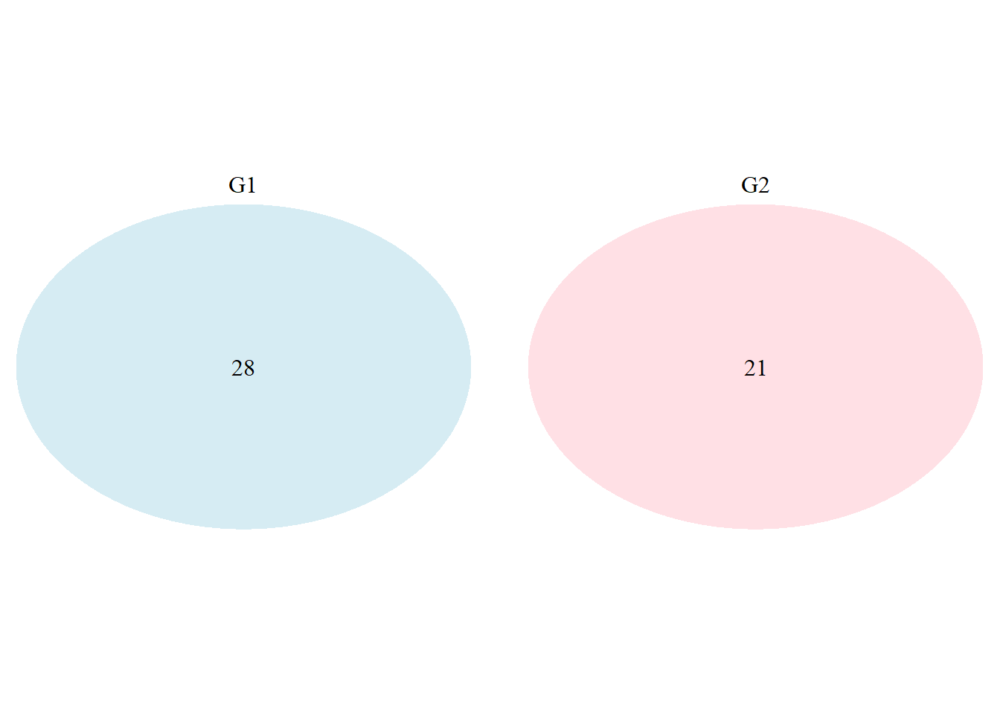
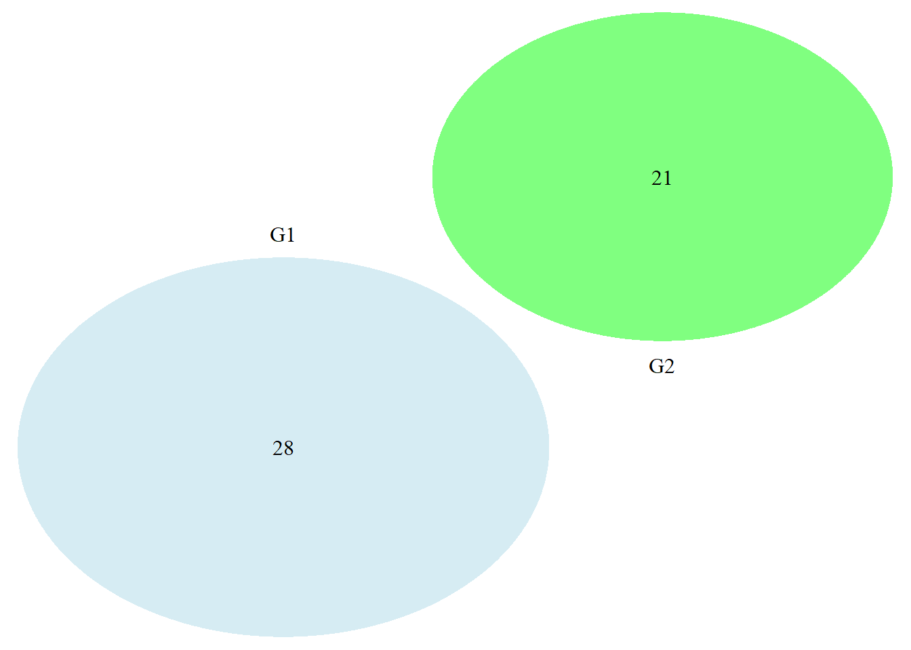

18 R Modulo 4.2 - Decomposição da diversidade
RESUMO
Na ecologia de comunidades, a diversidade de espécies é uma medida importante para entender a complexidade e a estrutura de uma comunidade de organismos. Vamos explorar algumas das métricas comuns usadas para avaliar a diversidade de espécies.
Apresentação
Na ecologia de comunidades, a diversidade de espécies é uma medida importante para entender a complexidade e a estrutura de uma comunidade de organismos. Vamos explorar algumas das métricas comuns usadas para avaliar a diversidade de espécies. Essas métricas são usadas para avaliar a diversidade e a estrutura de comunidades ecológicas. Elas podem fornecer informações importantes sobre como as diferentes espécies interagem em um ecossistema e como a diversidade de espécies pode ser afetada por mudanças ambientais ou distúrbios (MAGURRAN, 1988).
18.1 Sobre os dados
Usaremos para esse tutorial dois conjuntos de dados. A Matriz comunitária (ppbio06c-peixes.xlsx) de dados coletados no Programa de Pesquisa em Biodiversidade - PPBio (Veja Programa de Pesquisa em Biodiversidade – PPBio). Esses são dados de espécies de peixes distribuidas em diversas unidades amostrais (UA’s ou sítios). Essa é a matriz bruta de dados, porque os valores ainda não foram ajustados para os valores de Captura Por Unidade de Esforço (CPUE), nem foram relativizados ou transformados.
Além disso usaremos a tabela de agrupamentos (ppbio06-grupos)
Revise as informações sobre as bases de dados no capítulo Bases de Dados. A matriz de dados para esse Módulo pode ser baixada na seção Arquivos disponíveis.
Revise o módulo anterior Estrutura da Comunidade
18.1.1 Organização básica
dev.off() #apaga os graficos, se houver algum
rm(list=ls(all=TRUE)) #limpa a memória
cat("\014") #limpa o console Instalando os pacotes necessários para esse módulo.
install.packages("vegan")
install.packages("moments")
install.packages("ggplot2")
install.packages("dplyr")
install.packages("tidyr")
install.packages("tibble")
install.packages("tidyverse") #atente para alguma msg de erro qdo executar essa linha
install.packages("forcats")
install.packages("iNEXT")
install.packages("openxlsx")
install.packages("gt")
install.packages("ggVennDiagram")Depois de instalados, carregue os pacotes a seguir no seu computador.
Os códigos acima, são usados para instalar e carregar os pacotes
necessários para este módulo. Esses códigos são comandos para instalar
pacotes no R. Um pacote é uma coleção de funções, dados e documentação
que ampliam as capacidades do R (R CRAN,
(R DEVELOPMENT CORE TEAM, 2017)) e
RStudio
(R STUDIO TEAM, 2022)). No exemplo acima, o pacote openxlsx permite ler e
escrever arquivos Excel no R. Para instalar um pacote no R, você precisa
usar a função install.packages().
Depois de instalar um pacote, você precisa carregá-lo na sua sessão R
com a função library(). Por exemplo, para carregar o pacote
openxlsx, você precisa executar a função library(openxlsx). Isso irá
permitir que você use as funções do pacote na sua sessão R. Você precisa
carregar um pacote toda vez que iniciar uma nova sessão R e quiser usar
um pacote instalado.
Agora vamos definir o diretório de trabalho. Esse código é usado
para obter e definir o diretório de trabalho atual no R. O comando
getwd() retorna o caminho do diretório onde o R está lendo e salvando
arquivos. O comando setwd() muda esse diretório de trabalho para o
caminho especificado entre aspas. No seu caso, você deve ajustar o
caminho para o seu próprio diretório de trabalho. Lembre de usar a
barra “/” entre os diretórios. E não a contra-barra “\”.
18.1.2 Importando a planilha
Note que o símbolo # em programação R significa
que o texto que vem depois dele é um comentário e não será executado
pelo programa. Isso é útil para explicar o código ou deixar anotações.
- Ajuste a primeira linha do código abaixo para refletir
“C:/Seu/Diretório/De/Trabalho/Planilha.xlsx”.
- Ajuste o parâmetro sheet = "Sheet1" para refletir a aba correta do
arquivo .xlsx a ser importado.
#dir <- getwd() #criamos um vetor com o diretório de trbalho
#shell.exec(dir) #abre o diretorio de trabalho no Windows Explorer
ppbio <- read.xlsx("D:/Elvio/OneDrive/Disciplinas/_EcoNumerica/5.Matrizes/ppbio06p-peixes.xlsx",
rowNames = T, colNames = T,
sheet = "Sheet1")
str(ppbio)
#View(ppbio)
ppbio[1:5,1:5] #[1:5,1:5] mostra apenas as linhas e colunas de 1 a 5.## 'data.frame': 23 obs. of 35 variables:
## $ ap-davis : num 0 0 0 0 0 0 0 0 0 0 ...
## $ as-bimac : num 194 19 23 142 5 46 206 16 234 0 ...
## $ as-fasci : num 55 0 1 3 1 0 64 0 7 1 ...
## $ ch-bimac : num 0 0 13 3 0 178 0 0 238 0 ...
## $ ci-ocela : num 0 0 0 0 40 0 0 13 0 0 ...
## $ ci-orien : num 5 0 0 69 9 0 25 24 0 5 ...
## $ co-macro : num 0 0 0 0 0 0 0 0 2 0 ...
## $ co-heter : num 1 0 0 0 0 0 0 0 0 0 ...
## $ cr-menez : num 14 0 0 4 0 0 8 0 0 1 ...
## $ cu-lepid : num 0 0 0 0 0 0 0 0 0 0 ...
## $ cy-gilbe : num 0 0 0 0 0 0 0 0 0 50 ...
## $ ge-brasi : num 3 0 0 0 0 0 1 0 0 3 ...
## $ he-margi : num 0 0 0 1 0 0 0 0 0 1 ...
## $ ho-malab : num 1 5 0 17 10 2 31 4 20 4 ...
## $ hy-pusar : num 9 2 0 43 2 0 11 0 0 3 ...
## $ le-melan : num 0 0 0 0 0 0 0 0 0 0 ...
## $ le-piau : num 3 0 0 1 3 0 2 1 0 0 ...
## $ le-taeni : num 0 0 0 0 0 0 0 0 0 0 ...
## $ mo-costa : num 0 0 0 0 0 0 0 0 0 0 ...
## $ mo-lepid : num 39 0 0 1 0 0 0 0 0 0 ...
## $ or-nilot : num 36 0 0 77 0 0 138 0 0 73 ...
## $ pa-manag : num 0 0 0 0 0 0 0 0 0 0 ...
## $ pimel-sp : num 6 0 0 0 0 0 0 0 0 0 ...
## $ po-retic : num 0 0 0 20 0 0 5 0 0 0 ...
## $ po-vivip : num 47 15 0 221 32 0 326 10 0 28 ...
## $ pr-brevi : num 5 0 1 15 5 2 164 0 0 59 ...
## $ ps-rhomb : num 0 0 0 0 0 0 1 0 0 0 ...
## $ ps-genise: num 0 0 0 0 0 0 1 0 0 0 ...
## $ se-heter : num 40 14 4 60 0 0 38 0 0 3 ...
## $ se-piaba : num 68 0 0 0 0 0 0 0 0 0 ...
## $ se-spilo : num 0 0 0 0 0 0 1 0 0 0 ...
## $ st-noton : num 1 0 0 25 0 0 115 0 0 64 ...
## $ sy-marmo : num 0 0 0 0 1 0 0 0 0 0 ...
## $ te-chalc : num 0 0 0 0 0 0 0 0 0 0 ...
## $ tr-signa : num 18 0 0 15 0 0 7 0 0 141 ...
## ap-davis as-bimac as-fasci ch-bimac ci-ocela
## S-R-CT1 0 194 55 0 0
## S-R-CP1 0 19 0 0 0
## S-A-TA1 0 23 1 13 0
## S-R-CT2 0 142 3 3 0
## S-R-CP2 0 5 1 0 40Exibindo os dados importados (esses comando são “case-sensitive”
ignore.case(object)).
18.2 REINÍCIO 1
Aqui cria-se um novo objeto do R (m_trab, ou a matriz de trabalho,
para esse momento) que substitui a matriz de dados original, por uma
nova matriz que pode ser a matriz relativizada, transformada,
transposta, etc. Dessa forma, mantemos a matriz de dados original caso
precisemos dela novamente.
Abreviações
No interesse de sistematizar o código R das várias matrizes que são comumente usadas em uma AMD, a tabela @ref(tab:42tbl-m_2) resume seus tipos e abreviações.
18.3 Análise de Espécies Compartilhadas
Instalando os pacotes necessários
install.packages("dplyr")
install.packages("eulerr")
install.packages("VennDiagram")
install.packages("ggVennDiagram")
install.packages("ggvenn")
install.packages("gplots") Carregado a base de dados teste para ajudar no entendimento.
teste <- read.table(text = "
SP1 SP2 SP3 SP4 SP5 SP6 SP7 SP8 SP9 SP10 SP11 SP12 SP13 SP14 SP15 SP16 SP17 SP18 SP19 SP20
A1 1 0 0 1 0 1 1 1 0 0 1 0 0 1 0 1 1 1 0 0
A2 1 0 0 1 0 1 1 0 0 0 1 0 0 1 0 1 1 0 0 0
A3 1 0 0 1 0 1 1 0 0 0 1 0 0 1 0 1 1 0 0 0
B1 0 1 0 1 1 0 1 0 1 0 0 1 0 1 1 0 1 0 1 0
B2 0 1 0 1 1 0 1 0 0 0 0 1 0 1 1 0 1 0 0 0
B3 0 1 0 1 1 0 1 0 0 0 0 1 0 1 1 0 1 0 0 0
C1 0 0 1 0 1 1 1 0 0 1 0 0 1 0 1 1 1 0 0 1
C2 0 0 1 0 1 1 1 0 0 0 0 0 1 0 1 1 1 0 0 0
C3 0 0 1 0 1 1 1 0 0 0 0 0 1 0 1 1 1 0 0 0
", header = TRUE, row.names = 1)
teste18.4 REINÍCIO 2
18.4.1 Separando a matriz ppbio em suas partes (S e B ou A e R)
Separa-se S- e B-, e atribui-se, respectivamente, aos grupos G1 e G2
e remove-se as colunas zeradas.
G1 <- m_trab[1:12,]
names(which(colSums(G1) == 0)) #all-zero columns
G1 <- G1[, colSums(G1 != 0) > 0]
G2 <- m_trab[13:23,]
names(which(colSums(G2) == 0)) #all-zero columns
G2 <- G2[, colSums(G2 != 0) > 0]18.4.1.1 Mesmo procedimento usando o comando grepl() do pacote dplyr
Outra forma de separar grupos, mas agpra para R- e A-,
atribuindo-se, respectivamente, aos grupos G3 e G4 e removendo-se as
colunas zeradas.
library(dplyr)
G3 <- filter(m_trab, grepl("R-", row.names(m_trab)))
names(which(colSums(G3) == 0)) #all-zero columns
G3 <- G3[, colSums(G3 != 0) > 0]
G4 <- filter(m_trab, grepl("A-", row.names(m_trab)))
names(which(colSums(G4) == 0)) #all-zero columns
G4 <- G4[, colSums(G4 != 0) > 0]| Hierarquia | n*=23 | ||||
|---|---|---|---|---|---|
| Área | |||||
| S- | Ambiente | Ponto | Coleta | Data | |
| B- | R- | CT | 1 | 01-04-2006 | |
| A- | CP | 2 | 26-06-2006 | ||
| TA | 3 | 22-09-2006 | |||
| MU | 4 | 17-12-2006 | |||
| GU | |||||
| PC | |||||
| 2 | x 2 | x 6 | x 4 | np**= 96 |
18.5 Táxons compartilhados pelas duas bases de dados
18.5.1 Bases de dados em arquivos diferentes B e S
Nos códigos abaixo, a função intersect() é usada para se obter os
nomes de colunas em comum entre fixo e entorno, que são guardados em
um vetor. Esses vetores são repassados nos outros argumentos
subsequentes. O propósito dos argumentos setdiff() e \<- 0 não é
preencher células vazias com zeros, mas adicionar novas colunas em cada
data frame com nomes de colunas que estão presentes em um data frame mas
não em outro. Se uma coluna está faltando em um data frame, ela será
adicionada aquele data frame com o termo NA ou NULL. Para substituir
os valores rotulados de NA ou NULL usa-se a função
merged[is.na(merged)] <- 0. Ver Apêndices.
shared_spp <- intersect(names(G1), names(G2)) #get the common column names
shared_spp
G1_only <- setdiff(names(G1), names(G2))
G1_only
G2_only <- setdiff(names(G2), names(G1))
G2_only
Riqueza <- length(shared_spp) + length(G1_only) + length(G2_only)
RiquezaCriando um data.frame com todas as espécies compartilhadas e
exclusivas.
library(tidyverse)
# Create a data frame with all species
all_species <- data.frame(
type = c(rep("Shared", length(shared_spp)),
rep("G1_only", length(G1_only)),
rep("G2_only", length(G2_only))),
species = c(shared_spp, G1_only, G2_only)
)
# Create a table using the `table()` function
species_table <- table(all_species$type, all_species$species)
# Convert the table to a data frame and format it
species_table_df <- as.data.frame.matrix(species_table)
rownames(species_table_df) <- c("G1_only", "G2_only", "Shared")
species_table_df <- t(species_table_df[, order(colnames(species_table_df))])
species_table_df <- as.data.frame(species_table_df)
species_table_df
# Ordenando pelo nome da coluna
species_table_df <- rownames_to_column(species_table_df, var = "Espécies")
species_table_df <- species_table_df[order(species_table_df$G1_only, species_table_df$G2_only, species_table_df$Shared, decreasing = TRUE),]
library(gt)
gt(species_table_df)18.6 REINÍCIO 3
Aqui cria-se o vertor da matriz bruta a partir da base de dados depois de feitos os ajustes necessários.
18.6.1 Criando uma matriz de médias
#Inserindo coluna para agrupamentos
ncol(m_bruta); nrow(m_bruta) #no. de N colunas x M linhas
m_bruta_g <- cbind(Grupos = rownames(m_bruta), m_bruta)
###Mudando nomes de linhas, ajuste em BB-EN
#m_bruta_g$Grupos[m_bruta_g$Grupos == "EN11"] <- "BE11"
#m_bruta_g$Grupos[m_bruta_g$Grupos == "EN14"] <- "BE14"
#m_bruta_g$Grupos[m_bruta_g$Grupos == "EN15"] <- "BE15"
###
agrup1 <- substr(m_bruta_g[, 1], 1,1)
agrup1
m_bruta_g <- m_bruta_g %>% mutate(Grupos=c(agrup1))
#m_avg_part <- aggregate(m_bruta_g[, 2:3], list(m_bruta_g$Grupos), mean)
m_avg <- m_bruta_g %>%
group_by(Grupos) %>%
summarise(across(.cols = everything(), ~ mean(.x, na.rm = TRUE)))
#m_avg <- m_bruta_g %>%
# group_by(Grupos) %>%
# summarise(across(.cols = everything(), list(mean = mean, sd = sd)))
#?across
#Primeira coluna para nomes das linhas
m_avg <- as.data.frame(m_avg)
class(m_avg)
rownames(m_avg) <- m_avg[,1]
m_avg[,1] <- NULL
m_avg
#Salvando a matriz
write.table(m_avg,
"m_avgcsv.csv",
append = F,
quote = TRUE,
sep = ";", dec = ",",
row.names = T)
m_avg1_csv <- read.csv("m_avgcsv.csv",
sep = ";", dec = ",",
header = T,
row.names = 1,
na.strings = NA)18.6.2 Análise de Espécies Compartilhadas: Em arquivos diferentes
18.6.3 Bases de dados no mesmo arquivo ppbio
Pode-se usar a matriz teste.xlsx para testar e verificar os resultados
dos comandos em comparação com as matrizes reais. O comando fix()
permite editar uma matriz. A matriz de teste tem 9 linhas
e 20 colunas, com os nomes A1, A2, A3, B1, B2, B3, C1, C2, C3 nas linhas e
SP1, SP2, SP3, SP4, SP5, SP6, SP7, SP8, SP9, SP10, SP11, SP12, SP13, SP14, SP15, SP16, SP17, SP18, SP19, SP20 como os nomes das colunas. Códigos baseados nas
letras A, B e C, portanto, se referem a matriz de teste.
A seguir separamos a matriz em suas partes.
data <- (teste)
data
library(dplyr)
A <- filter(data, grepl("A", row.names(data)))
names(which(colSums(A) == 0)) #all-zero columns
A <- A[, colSums(A != 0) > 0]
B <- filter(data, grepl("B", row.names(data)))
names(which(colSums(B) == 0)) #all-zero columns
B <- B[, colSums(B != 0) > 0]
C <- filter(data, grepl("C", row.names(data)))
names(which(colSums(C) == 0)) #all-zero columns
C <- C[, colSums(C != 0) > 0]18.8 Encontrando espécies exclusivas
18.8.1 Escolhendo as LINHAS OU GRUPOS para comparar
# Get the row indices where "A" occurs
rownames(data)
rows <- grep("S-", rownames(data))
#rows <- grep("B-", rownames(data))
#rows <- c(1:36)
rows18.8.1.1 Espécies exclusivas que ocorrem em 1 LINHA E OUTRA, OU EM 1 GRUPO E OUTRO (#EM TESTE)
Aqui procuramos espécies que ocorrem em todas as linhas do grupo
definido pelo vetor rows no chunk anterior rows
# Initialize an empty vector to store species exclusive to 'A' rows
species_only_in <- character(0)
# Iterate over each column
for (col in colnames(data)) {
# Check if the species occurs only in 'A' rows
if (all(data[rows, col] != 0) && !any(data[-rows, col] != 0)) {
species_only_in <- c(species_only_in, col)
}
}
# Print species that only occur in 'A' rows
print(species_only_in)
data18.8.2 Espécies exclusivas para 1 LINHA OU 1 GRUPO - Baseado na soma dos grupos (#FUNCIONA)
# Get the row indices where 'A' occurs
rows
# Calculate the sum of occurrences of each species in 'A' rows
sum_of <- colSums(data[rows, ])
sum_of
# Initialize an empty vector to store species exclusive to 'A' rows
species_only_in <- character(0)
# Iterate over each column
for (col in colnames(data)) {
# Check if the species occurs only in 'A' rows
if (sum(data[rows, col]) == sum_of[col] && !any(data[-rows, col] != 0)) {
species_only_in <- c(species_only_in, col)
}
}
# Print species that only occur in 'A' rows
print(species_only_in)
species_only_in
data
rows18.9 Espécies exclusivas para 2 LINHAS OU 2 GRUPOs - Baseado na soma dos grupos (#FUNCIONA)
# Get the row indices where 'A' occurs
rows <- grep("S-", rownames(data))
rows2 <- grep("B-", rownames(data))
#rows <- as.vector(rbind(c(rows, rows2)))
rows# Calculate the sum of occurrences of each species in 'A' rows
sum_of <- colSums(data[rows, ])
sum_of
# Initialize an empty vector to store species exclusive to 'A' rows
species_only_in <- character(0)
# Iterate over each column
for (col in colnames(data)) {
# Check if the species occurs only in 'A' rows
if (sum(data[rows, col]) == sum_of[col] && !any(data[-rows, col] != 0)) {
species_only_in <- c(species_only_in, col)
}
}
# Print species that only occur in 'A' rows
print(species_only_in)
species_only_in
data
rows
#identical(S_only, species_only_in)
#intersect(S_only, species_only_in) #shared column names
#setdiff(S_only, species_only_in) #only in 1st vector
#length(intersect(S_only, species_only_in)) #how many18.10 Encontrando espécies compartilhadas ENTRE DOIS (OU MAIS) GRUPOS
Encontra espécies que são compartilhadas (ocorrem em TODAS AS
LINHAS) dentro do grupo analisado. Mas, não significa que elas estejam
apenas nestas linhas. A função any() indica que QUALQUER linha em
comum entre duas colunas faz com que elas tenha esses colunas
compartilhadas. Já a função all() indica que, para duas colunas terem
linhas compartilhadas os grupos das colunas tem que compartilhar
TODAS as suas linhas. Uma análise sobre esse loop. Adicionamos
&& any(data[rows_G3, col] != 0) para um terceiro grupo e assim
sucessivamente.
# Get the rows corresponding to A and B (and C)
rows_G1 <- grep("S-", rownames(data))
rows_G2 <- grep("B-", rownames(data))
rows_G3 <- grep("R-", rownames(data))
rows_G4 <- grep("A-", rownames(data))
#rows <- as.vector(cbind(c(rows_G1, rows_G2, rows_G3, rows_G4)))
# Initialize an empty vector to store species that A and B have in common
species_in <- character(0)
# Iterate over each column
for (col in colnames(data)) {
# Check if the species has at least one non-zero value in both A and B rows
if (any(data[rows_G1, col] != 0) && any(data[rows_G2, col] != 0)) {
species_in <- c(species_in, col)
}
}
# Print species that A and B have in common
print(species_in)
shared_spp
dataUma análise feita pelo ChatGPT sobre o loop “for…{…if{…}}” acima
e os outros anteriores é apresentada
aqui
18.11 Diagrama de Venn
Primeiro é necessário criar uma matriz binária para os valores das colunas nas linhas. Isso é feito a seguir.
library("gt")
m_venn <- as.data.frame(t(m_avg))
m_venn
gt(round(m_venn, 2), rownames_to_stub = TRUE)
m_venn[m_venn !=0] <- 1 #matriz binária ## B S
## ap-davis 2.45454545 0.00000000
## as-bimac 91.27272727 106.58333333
## as-fasci 2.36363636 11.00000000
## ch-bimac 0.00000000 58.75000000
## ci-ocela 0.54545455 5.33333333
## ci-orien 0.00000000 11.91666667
## co-macro 0.00000000 0.16666667
## co-heter 0.00000000 0.08333333
## cr-menez 0.00000000 2.33333333
## cu-lepid 1.90909091 0.00000000
## cy-gilbe 7.36363636 4.16666667
## ge-brasi 92.00000000 0.66666667
## he-margi 0.00000000 0.16666667
## ho-malab 0.36363636 8.75000000
## hy-pusar 0.09090909 5.83333333
## le-melan 0.18181818 0.00000000
## le-piau 0.09090909 1.16666667
## le-taeni 0.09090909 0.00000000
## mo-costa 0.09090909 0.00000000
## mo-lepid 0.00000000 3.33333333
## or-nilot 46.63636364 27.08333333
## pa-manag 50.27272727 0.00000000
## pimel-sp 0.00000000 0.50000000
## po-retic 29.27272727 2.08333333
## po-vivip 19.90909091 63.25000000
## pr-brevi 1.45454545 21.16666667
## ps-rhomb 0.00000000 0.08333333
## ps-genise 0.00000000 0.08333333
## se-heter 12.18181818 13.50000000
## se-piaba 0.00000000 5.66666667
## se-spilo 0.00000000 0.08333333
## st-noton 0.00000000 17.08333333
## sy-marmo 0.00000000 0.08333333
## te-chalc 12.18181818 0.00000000
## tr-signa 2.45454545 15.08333333| B | S | |
|---|---|---|
| ap-davis | 2.45 | 0.00 |
| as-bimac | 91.27 | 106.58 |
| as-fasci | 2.36 | 11.00 |
| ch-bimac | 0.00 | 58.75 |
| ci-ocela | 0.55 | 5.33 |
| ci-orien | 0.00 | 11.92 |
| co-macro | 0.00 | 0.17 |
| co-heter | 0.00 | 0.08 |
| cr-menez | 0.00 | 2.33 |
| cu-lepid | 1.91 | 0.00 |
| cy-gilbe | 7.36 | 4.17 |
| ge-brasi | 92.00 | 0.67 |
| he-margi | 0.00 | 0.17 |
| ho-malab | 0.36 | 8.75 |
| hy-pusar | 0.09 | 5.83 |
| le-melan | 0.18 | 0.00 |
| le-piau | 0.09 | 1.17 |
| le-taeni | 0.09 | 0.00 |
| mo-costa | 0.09 | 0.00 |
| mo-lepid | 0.00 | 3.33 |
| or-nilot | 46.64 | 27.08 |
| pa-manag | 50.27 | 0.00 |
| pimel-sp | 0.00 | 0.50 |
| po-retic | 29.27 | 2.08 |
| po-vivip | 19.91 | 63.25 |
| pr-brevi | 1.45 | 21.17 |
| ps-rhomb | 0.00 | 0.08 |
| ps-genise | 0.00 | 0.08 |
| se-heter | 12.18 | 13.50 |
| se-piaba | 0.00 | 5.67 |
| se-spilo | 0.00 | 0.08 |
| st-noton | 0.00 | 17.08 |
| sy-marmo | 0.00 | 0.08 |
| te-chalc | 12.18 | 0.00 |
| tr-signa | 2.45 | 15.08 |
18.11.1 Usando o pacote eulerr
## Warning: pacote 'eulerr' foi compilado no R versão 4.5.3## Registered S3 method overwritten by 'eulerr':
## method from
## plot.venn gplots##
## Anexando pacote: 'eulerr'## O seguinte objeto é mascarado por 'package:gplots':
##
## venn#set.seed() #this seed changes the orientation of the sets
plot(euler(m_venn), counts = TRUE, fontface = 1)
18.12 Usando o pacote VennDiagram
## Warning: pacote 'VennDiagram' foi compilado no R versão 4.5.3## Carregando pacotes exigidos: grid## Carregando pacotes exigidos: futile.logger## Warning: pacote 'futile.logger' foi compilado no R versão 4.5.3##
## Anexando pacote: 'VennDiagram'## O seguinte objeto é mascarado por 'package:car':
##
## ellipse## O seguinte objeto é mascarado por 'package:ggpubr':
##
## rotate## Warning: pacote 'ggvenn' foi compilado no R versão 4.5.3G1 <- nrow(subset(m_venn, S==1))
G2 <- nrow(subset(m_venn, B==1))
#G3 <- nrow(subset(m_venn, R==1))
#G4 <- nrow(subset(m_venn, A==1))
G1_G2 <- nrow(subset(m_venn, G1==1 & G2==1))
#G3_G4 <- nrow(subset(m_venn, G3==1 & G4==1))
grid.newpage()
draw.single.venn(area = G1, category = "G1")

grid.newpage()
draw.single.venn(G1, category = "G1",
lty = "blank",
fill = "cornflower blue",
alpha = 0.5)

##lty - outline of cirlces, ## fill - colour, ## alpha - colour transparency
grid.newpage()
draw.pairwise.venn(G1, G2, G1_G2,
category = c("G1","G2"))

grid.newpage()
draw.pairwise.venn(G1, G2, G1_G2,
category = c("G1","G2"),
lty = rep("blank",2),
fill = c("light blue", "pink"),
alpha = rep(0.5,2),
cat.pos = c(0,0),
cat.dist = rep(0.025,2))

## cat.pos - position of category titles, represented by degree from the
## middle of the circle
## cat.dist - distance of the category titles from the edge of the circle
grid.newpage()
draw.pairwise.venn(G1, G2, G1_G2,
category = c("G1", "G2"),
lty = rep("blank",2),
fill = c("light blue", "pink"),
alpha = rep(0.5, 2),
cat.pos = c(0,0),
cat.dist = rep(0.025, 2),
scaled = FALSE)

## scaled - TRUE for scaled or FALSE for unscaled cirlces
grid.newpage() #<--
draw.pairwise.venn(area1 = G1, area2 = G2, cross.area = 0,
category = c("G1","G2"),
lty = rep("blank",2),
fill = c("light blue", "green"),
alpha = rep(0.5, 2),
cat.pos = c(0, 180),
euler.d = TRUE, sep.dist = 0.03,
rotation.degree = 45)

## euler.d - TRUE for movable circles; FALSE for unmovable circles. Must be
## TRUE to have space between non-overlapping circles.
## sep.dist - distance between circles
## rotation.degree - degrees the diagram is rotated
#grid.newpage()
#draw.triple.venn(area1 = BB, area2 = CA, area3 = EN,
# n12 = BB_CA, n23 = CA_EN, n13 = BB_EN,
# n123 = BB_CA_EN,
# category = c("Rio Barro Branco", #"Rio Caiana", "Entorno da REBio"),
# lty = "blank",
# fill = c("skyblue", "pink1", #"mediumorchid"),
# scaled = TRUE)
#grid.newpage()
#draw.quad.venn(area1 = BB, area2 = CA, area3 = EN, #area4 = RE,
# n12 = BB_CA, n23 = CA_EN, n13 = BB_EN,
# n14 = BB_RE, n24 = CA_RE, n34 = EN_RE,
# n123 = BB_CA_EN, n1234 = BB_CA_EN_RE,
# n124 = BB_CA_RE, n134 = BB_EN_RE,
# n234 = CA_EN_RE,
# category = c("BB", "CA", "EN", "RE"),
# lty = "blank",
# fill = c("skyblue", "pink1", #"mediumorchid", "orange"),
# scaled = TRUE)18.13 Diagrama de Venn - BASEADO EM PALAVRAS
Cálculo do overlap AQUI ou AQUI
lista <- m_venn
lista
G1 <- rownames(lista)[which(lista$S !=0)]
G2 <- rownames(lista)[which(lista$B !=0)]
G3 <- rownames(lista)[which(lista$R !=0)]
G4 <- rownames(lista)[which(lista$A !=0)]
over = list(G1, G2)
over
venn.diagram(#salva o diagrama em um arquivo
x = list(G1, G2),
category.names = c("G1","G2"),
filename = 'fig-venn_diagramm2.png',
height = 3000, width = 3000, resolution = 500,
disable.logging = T, scaled = T,
output = F,
lty = "blank",
fill = c("skyblue", "pink1"))## INFO [2026-07-24 16:51:17] $x
## INFO [2026-07-24 16:51:17] list(G1, G2)
## INFO [2026-07-24 16:51:17]
## INFO [2026-07-24 16:51:17] $category.names
## INFO [2026-07-24 16:51:17] c("G1", "G2")
## INFO [2026-07-24 16:51:17]
## INFO [2026-07-24 16:51:17] $filename
## INFO [2026-07-24 16:51:17] [1] "fig-venn_diagramm2.png"
## INFO [2026-07-24 16:51:17]
## INFO [2026-07-24 16:51:17] $height
## INFO [2026-07-24 16:51:17] [1] 3000
## INFO [2026-07-24 16:51:17]
## INFO [2026-07-24 16:51:17] $width
## INFO [2026-07-24 16:51:17] [1] 3000
## INFO [2026-07-24 16:51:17]
## INFO [2026-07-24 16:51:17] $resolution
## INFO [2026-07-24 16:51:17] [1] 500
## INFO [2026-07-24 16:51:17]
## INFO [2026-07-24 16:51:17] $disable.logging
## INFO [2026-07-24 16:51:17] T
## INFO [2026-07-24 16:51:17]
## INFO [2026-07-24 16:51:17] $scaled
## INFO [2026-07-24 16:51:17] T
## INFO [2026-07-24 16:51:17]
## INFO [2026-07-24 16:51:17] $output
## INFO [2026-07-24 16:51:17] F
## INFO [2026-07-24 16:51:17]
## INFO [2026-07-24 16:51:17] $lty
## INFO [2026-07-24 16:51:17] [1] "blank"
## INFO [2026-07-24 16:51:17]
## INFO [2026-07-24 16:51:17] $fill
## INFO [2026-07-24 16:51:17] c("skyblue", "pink1")
## INFO [2026-07-24 16:51:17]## Warning in make.truth.table(x): fixing missing, empty or duplicated names.## B S
## ap-davis 1 0
## as-bimac 1 1
## as-fasci 1 1
## ch-bimac 0 1
## ci-ocela 1 1
## ci-orien 0 1
## co-macro 0 1
## co-heter 0 1
## cr-menez 0 1
## cu-lepid 1 0
## cy-gilbe 1 1
## ge-brasi 1 1
## he-margi 0 1
## ho-malab 1 1
## hy-pusar 1 1
## le-melan 1 0
## le-piau 1 1
## le-taeni 1 0
## mo-costa 1 0
## mo-lepid 0 1
## or-nilot 1 1
## pa-manag 1 0
## pimel-sp 0 1
## po-retic 1 1
## po-vivip 1 1
## pr-brevi 1 1
## ps-rhomb 0 1
## ps-genise 0 1
## se-heter 1 1
## se-piaba 0 1
## se-spilo 0 1
## st-noton 0 1
## sy-marmo 0 1
## te-chalc 1 0
## tr-signa 1 1
## [[1]]
## [1] "as-bimac" "as-fasci" "ch-bimac" "ci-ocela" "ci-orien" "co-macro"
## [7] "co-heter" "cr-menez" "cy-gilbe" "ge-brasi" "he-margi" "ho-malab"
## [13] "hy-pusar" "le-piau" "mo-lepid" "or-nilot" "pimel-sp" "po-retic"
## [19] "po-vivip" "pr-brevi" "ps-rhomb" "ps-genise" "se-heter" "se-piaba"
## [25] "se-spilo" "st-noton" "sy-marmo" "tr-signa"
##
## [[2]]
## [1] "ap-davis" "as-bimac" "as-fasci" "ci-ocela" "cu-lepid" "cy-gilbe"
## [7] "ge-brasi" "ho-malab" "hy-pusar" "le-melan" "le-piau" "le-taeni"
## [13] "mo-costa" "or-nilot" "pa-manag" "po-retic" "po-vivip" "pr-brevi"
## [19] "se-heter" "te-chalc" "tr-signa"
##
## [1] 1
## $a1
## [1] "as-bimac" "as-fasci" "ch-bimac" "ci-ocela" "ci-orien" "co-macro"
## [7] "co-heter" "cr-menez" "cy-gilbe" "ge-brasi" "he-margi" "ho-malab"
## [13] "hy-pusar" "le-piau" "mo-lepid" "or-nilot" "pimel-sp" "po-retic"
## [19] "po-vivip" "pr-brevi" "ps-rhomb" "ps-genise" "se-heter" "se-piaba"
## [25] "se-spilo" "st-noton" "sy-marmo" "tr-signa"
##
## $a2
## [1] "ap-davis" "as-bimac" "as-fasci" "ci-ocela" "cu-lepid" "cy-gilbe"
## [7] "ge-brasi" "ho-malab" "hy-pusar" "le-melan" "le-piau" "le-taeni"
## [13] "mo-costa" "or-nilot" "pa-manag" "po-retic" "po-vivip" "pr-brevi"
## [19] "se-heter" "te-chalc" "tr-signa"
##
## $a3
## [1] "as-bimac" "as-fasci" "ci-ocela" "cy-gilbe" "ge-brasi" "ho-malab"
## [7] "hy-pusar" "le-piau" "or-nilot" "po-retic" "po-vivip" "pr-brevi"
## [13] "se-heter" "tr-signa"
##
## X1 X2 ..set..
## 1 TRUE TRUE X1∩X2
## 2 FALSE TRUE (X2)∖(X1)
## 3 TRUE FALSE (X1)∖(X2)
## ..values..
## 1 as-bimac, as-fasci, ci-ocela, cy-gilbe, ge-brasi, ho-malab, hy-pusar, le-piau, or-nilot, po-retic, po-vivip, pr-brevi, se-heter, tr-signa
## 2 ap-davis, cu-lepid, le-melan, le-taeni, mo-costa, pa-manag, te-chalc
## 3 ch-bimac, ci-orien, co-macro, co-heter, cr-menez, he-margi, mo-lepid, pimel-sp, ps-rhomb, ps-genise, se-piaba, se-spilo, st-noton, sy-marmo
## ..count..
## 1 14
## 2 7
## 3 14library("ggVennDiagram")
x <- list(
G1 = rownames(lista)[which(lista$S !=0)],
G2 = rownames(lista)[which(lista$B !=0)],
G3 = rownames(lista)[which(lista$R !=0)],
G4 = rownames(lista)[which(lista$A !=0)])
ggvenn(
x,
fill_color = c("#0073C2FF", "#EFC000FF", "#868686FF", "#CD534CFF"),
stroke_size = 0.5, set_name_size = 4
)
# Default plot
ggVennDiagram(
x, label_alpha = 0,
category.names = c("G1","G2","G3","G4")
) +
ggplot2::scale_fill_gradient(low="yellow",high = "green")
grid.newpage()
ggVennDiagram(x[1:2], label_alpha = 0)
library("ggvenn")
grid.newpage()
ggvenn(x)
library("gplots")
grid.newpage()
v.table <- venn(x)
v.table <- as.data.frame(v.table)
print(v.table)
print(t(m_avg))18.14 PARTIÇÃO DA DIVERSIDADE
O output da função adipart no pacote vegan do R fornece uma análise
detalhada da diversidade alfa, beta e gama baseada no índice de riqueza
para o seu conjunto de dados fauna.zoo em diferentes escalas espaciais
definidas por escala.total. Aqui está uma explicação detalhada do
output e sua interpretação:
18.14.1 Output da Função adipart
18.15 Extrair valores do objeto part - geral
statistic <- part.geral\(statistic SES <- part.geral\)oecosimu\(z mean <- part.geral\)oecosimu\(means lower_2.5 <- apply(part.geral\)oecosimu\(simulated, 1, quantile, probs = 0.025) median_50 <- apply(part.geral\)oecosimu\(simulated, 1, quantile, probs = 0.50) upper_97.5 <- apply(part.geral\)oecosimu\(simulated, 1, quantile, probs = 0.975) Pr_sim <- part.geral\)oecosimu$pval
18.16 Definir função para adicionar significância
get_significance <- function(p) { if (p <= 0.001) { return(“”) } else if (p <= 0.01) { return(””) } else if (p <= 0.05) { return(””) } else if (p <= 0.1) { return(“.”) } else { return(” “) } } significance <- sapply(Pr_sim, get_significance)
18.17 Criar dataframe com todas as informações
diversity_data <- data.frame( Component = names(statistic), Observed = round(statistic, 2), SES = round(SES, 2), Mean = round(mean, 2), Lower_2.5 = round(lower_2.5, 2), Median_50 = round(median_50, 2), Upper_97.5 = round(upper_97.5, 2), Pr_sim = Pr_sim, Sign = significance )
18.18 Exibir a tabela
print(diversity_data) str(part.geral) gt(diversity_data)
18.18.0.1 Chamada
A chamada da função especifica os parâmetros utilizados: - y:
fauna.zoo (seu conjunto de dados) - x: escala.total (as escalas
espaciais) - index: “richness” (medida de diversidade) -
weights: “unif” (pesos uniformes) - nsimul: 999 (número de
simulações para o modelo nulo)
18.18.0.2 Modelo Nulo
O método usado para as simulações do modelo nulo é r2dtable com 999
simulações. Este método simula tabelas aleatórias com as mesmas somas de
linhas e colunas que a tabela observada.
18.18.0.3 Estatísticas e Teste de Hipótese
O output fornece os valores observados das estatísticas, os tamanhos dos efeitos padronizados (SES), médias, percentis (2.5%, 50%, 97.5%) e valores de p (Pr(sim.)) para cada componente de diversidade.
18.18.1 Análise das Estatísticas
- alpha.1, alpha.2, alpha.3: Estes são os valores de diversidade
alfa em diferentes níveis hierárquicos.
- A diversidade alfa mede a riqueza média de espécies dentro de cada unidade de amostragem.
- Os valores observados são significativamente menores do que os valores simulados, conforme indicado pelos valores de p muito baixos (0.001).
- gamma: Esta é a diversidade gama, representando a riqueza total
de espécies em todas as unidades de amostragem.
- O valor observado é igual ao valor simulado, indicando que não há desvio significativo do modelo nulo (valor de p = 1.000).
- beta.1, beta.2, beta.3: Estes são os valores de diversidade beta
em diferentes níveis hierárquicos.
- A diversidade beta mede a diferenciação na composição de espécies entre as unidades de amostragem.
- O valor beta.1 observado é significativamente menor, enquanto os valores beta.2 e beta.3 são significativamente maiores do que os valores simulados (todos os valores de p = 0.001).
18.18.1.1 Códigos de Significância
- ‘***’ indica um valor de p < 0.001, mostrando resultados altamente significativos.
18.18.2 Interpretação
- Diversidade Alfa: Os valores de diversidade alfa observados significativamente menores sugerem que a riqueza de espécies dentro das unidades individuais é menor do que o esperado ao acaso.
- Diversidade Gama: A riqueza total de espécies (diversidade gama) não difere do valor esperado, o que implica que a riqueza total é como esperado.
- Diversidade Beta: Os resultados mistos para diversidade beta (beta.1 menor e beta.2, beta.3 maiores) indicam variabilidade na composição de espécies entre as unidades de amostragem em diferentes níveis hierárquicos. Isso pode sugerir diferentes processos ecológicos ou estruturas comunitárias nessas escalas.
No geral, esses resultados fornecem insights sobre a partição da diversidade dentro do seu conjunto de dados, destacando áreas onde os padrões observados diferem daqueles esperados sob um modelo nulo.
O modelo nulo r2dtable é uma técnica utilizada em ecologia e biologia
da conservação para gerar tabelas de contingência aleatórias que mantêm
as margens (somas de linhas e colunas) iguais às da tabela original.
Isso é útil para testes de hipótese e análise de diversidade porque
permite comparar os dados observados com o que seria esperado por acaso,
mantendo as restrições estruturais dos dados originais.
18.18.3 Detalhes do r2dtable
- Função:
r2dtablefaz parte do pacote base do R e é usado para gerar tabelas de contingência aleatórias. - Entrada: A função
r2dtable(n, r, c)toma três argumentos:n: número de tabelas aleatórias a serem geradas.r: vetor com as somas das linhas da tabela original.c: vetor com as somas das colunas da tabela original.
- Saída: Produz uma lista de tabelas de contingência aleatórias que têm as mesmas somas de linhas e colunas que a tabela original.
18.18.4 Como Funciona
O algoritmo por trás do r2dtable usa uma permutação aleatória das
células da tabela original, mas ajusta as células de forma que as somas
das linhas e colunas permaneçam constantes. Isso cria uma distribuição
nula contra a qual os dados observados podem ser comparados.
18.18.5 Uso no Contexto do vegan e adipart
Quando aplicado no contexto de diversidade com a função adipart do
pacote vegan:
- Geração de Tabelas Aleatórias:
r2dtablegera tabelas de contingência aleatórias baseadas nas margens (somas das linhas e colunas) da tabela originalfauna.zoo. - Simulações: A função
adipartutiliza essas tabelas para criar uma distribuição nula de riqueza de espécies (ou qualquer outro índice de diversidade especificado). - Comparação com Dados Observados: Os valores observados de alfa, beta e gama diversidade são comparados com a distribuição nula para determinar se os padrões observados são significativamente diferentes do que seria esperado por acaso.
18.18.6 Interpretação
- Valores Observados vs. Valores Simulados: Comparando os valores observados com os valores simulados, pode-se determinar se a diversidade observada é maior ou menor do que o esperado por acaso.
- Significância Estatística: Valores de p são calculados para testar a significância das diferenças entre os valores observados e a distribuição nula.
18.18.7 Exemplos de Uso
Aqui está um exemplo básico de como o r2dtable pode ser usado
diretamente no R:
# Suponha uma tabela original com margens definidas
r <- c(20, 30, 25) # somas das linhas
c <- c(25, 25, 25) # somas das colunas
# Gerar 999 tabelas aleatórias
simulated_tables <- r2dtable(999, r, c)
# Visualizar a primeira tabela simulada
print(simulated_tables[[1]])No contexto do vegan e adipart, você normalmente não chamaria
r2dtable diretamente, pois a função adipart faz isso internamente
para gerar as distribuições nulas necessárias para a análise de
diversidade.
Essa técnica permite realizar uma análise robusta da diversidade, considerando a estrutura dos dados e fornecendo uma base para testes de hipóteses sobre os padrões de diversidade observados.
Claro! Vamos interpretar os resultados em português:
A saída que você compartilhou parece ser de uma análise de simulação
hierárquica realizada com a função hiersimu, que provavelmente faz
parte de um pacote para estatísticas ecológicas ou biodiversidade no R.
Aqui está uma breve interpretação dos componentes principais:
- statistic: O valor observado da estatística de diversidade para cada nível hierárquico (por exemplo, habitat, ponto, rio, etc.).
- SES (Tamanho do Efeito Padronizado): Indica como a estatística observada se compara ao modelo nulo. Um SES negativo significa que a diversidade observada é menor do que a esperada por acaso, enquanto um SES positivo significa que é maior.
- mean, 2.5%, 50%, 97.5%: Esses valores representam a média e o intervalo de confiança de 95% (IC) para a estatística sob o modelo nulo (ou seja, valores simulados).
- Pr(sim.): O valor-p que indica a probabilidade de que a estatística observada seja menor ou maior do que os valores simulados sob a hipótese nula. Um valor-p baixo (por exemplo, <0.01) sugere que a estatística observada é significativamente diferente do modelo nulo.
Aqui está a interpretação dos resultados:
- rebio.habitat:
- Estatística observada: 0.90817
- SES: -35.933 (sugerindo uma diversidade muito menor comparada ao modelo nulo)
- Valor-p: 0.01, indicando que o valor observado é significativamente menor do que o esperado por acaso.
- rebio.ponto:
- Estatística observada: 0.99444
- SES: -39.547
- Valor-p: 0.01, indicando uma diversidade significativamente menor.
- rebio.rio:
- Estatística observada: 1.61250
- SES: -23.345
- Valor-p: 0.01, indicando uma diversidade significativamente menor.
- rebio:
- Estatística observada: 1.80002
- SES: 0.000 (indicando que a diversidade observada está exatamente no nível esperado pelo modelo nulo)
- Valor-p: 1.00, significando que não há diferença significativa em relação ao modelo nulo.
Resumindo, todos os níveis hierárquicos, exceto “rebio”, mostram desvios significativos na diversidade em relação ao que é esperado por acaso, com uma diversidade observada significativamente menor. “rebio” está exatamente no nível esperado, sem desvio significativo.
Apêndices
Sites consultados
Script limpo
Aqui apresento o scrip na íntegra sem os textos ou outros comentários.
Você pode copiar e colar no R para executa-lo. Lembre de remover os
# ou ## caso necessite
executar essas linhas.